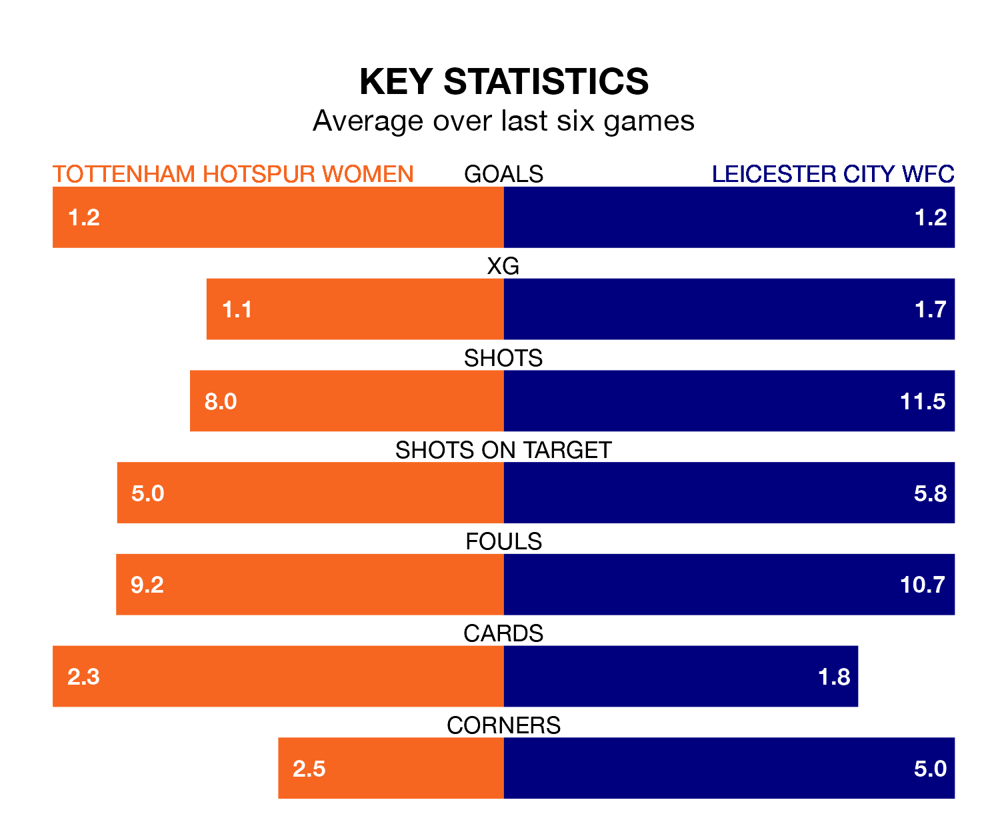

Tottenham Hotspur Women host Leicester City WFC on Sunday at Brisbane Road in the FA Women's Super League.
In their last league match, on March 3, Tottenham Hotspur lost to Arsenal Women 1-0 away.
Leicester City WFC also lost, 4-0 at home against Chelsea Women.
In the last 10 years, Tottenham Hotspur and Leicester City WFC have played each other on eight occasions. Tottenham Hotspur won six of them, Leicester City WFC one, and they drew once.
On average, Spurs scored 1.5 goals and Leicester City WFC 0.6 in those matches.
Their last meeting was on November 19, when they played out a 1-1 draw.
With 21 goals in 15 games so far this season, Tottenham Hotspur are scoring at below the league average rate with 1.4 goals per game. And they are conceding more than average, letting in 29 goals at a rate of 1.9 per game.
Leicester City WFC are also below average scorers, with 1.4 goals per game, compared to a league average of 1.7. They have conceded 2.0 goals per game.
In Martha Thomas, Spurs have one of the league's sharpest shooters so far this season. She has notched seven goals in 15 appearances, to sit sixth in the scoring charts.
Her goal rate of one every 177 minutes is quicker than that of Jutta Rantala, the away team's top scorer with a goal every 227 minutes, and a total of five goals in 15 games.
The hosts are in mixed form in the FA Women's Super League, with two wins and a draw from their last six games.
And also with two wins and a draw over that period, Leicester City WFC's form is identical – they have both taken seven points from 18.
Tottenham Hotspur are sixth in the table after 15 games, of which they have won five and drawn four, earning 19 points.
Leicester City WFC are one place behind Tottenham Hotspur in seventh, with four wins and four draws putting them on 16 points.
Updated: 09:34 (UTC), 08/03/24